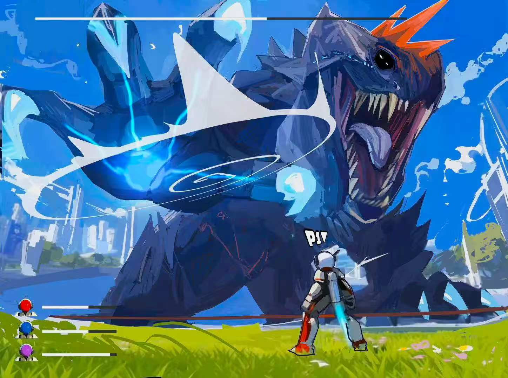

Kaiju Corp.
An asymmetric VR + PC game exploring gaze and gesture interaction, developed by VGS Studio. Currently in active production with a target delivery of August 2026.
Project Introduction
Kaiju Corp. is a self-directed asymmetric multiplayer game developed by VGS Studio. A VR player controls a kaiju through gaze and hand gestures, while PC players move through the environment, fight back, and pursue their own objectives.
As Project Manager and Producer, I lead iterative planning, scope management, team coordination, playtesting, and external art collaboration. The project is currently in active production and is scheduled for delivery in August 2026.
Role & Responsibilities
As Project Manager and Producer, I help the team turn an experimental interaction concept into a structured, testable, and achievable game production. Because Kaiju Corp. is a self-directed venture project, our team is responsible for both the creative direction and the production strategy. My role is to help the team establish a shared vision, evaluate priorities, manage uncertainty, and keep the project moving toward a realistic August delivery.
Production and Scope Management
Built the project roadmap, milestones, sprint structure, and prioritized backlog. Translated the creative vision into user stories, work packages, and achievable production goals. Managed scope through regular reviews of player value, team capacity, dependencies, and technical risk. Updated priorities through retrospectives, prototype findings, and playtest results.
Team and Production Coordination
Facilitated stand-ups, sprint planning, milestone reviews, and retrospectives. Tracked ownership, blockers, dependencies, and next actions across the core team. Turned team discussions and creative ideas into clear production decisions and tasks. Maintained visibility across design, development, testing, art, and integration.
External Art Collaboration
Coordinated external art collaborators supporting 3D asset production. Matched assignments to contributor strengths, availability, and capacity. Provided clear priorities, references, ownership, and review points. Tracked asset creation, revision, approval, and Unity integration separately.
Production Journey
Define the Core Interaction
Project kickoff
Clarified project direction, defined measurable goals, and established gaze and gesture as the core interaction focus while keeping voice interaction outside the main scope.
Build the Multiplayer Foundation
Early development
Organized features into sprint goals, tracked dependencies between networking and gameplay systems, and protected time for integration rather than only isolated feature development.
Test and Refine the Interaction
Prototype testing
Structured the test process, defined observation criteria, assigned team responsibilities, synthesized findings, and translated meaningful patterns into production priorities.
Reassess and Replan
Iterative review
Kept the backlog, milestones, and priorities responsive to evidence while ensuring the team remained aligned with the August delivery target.
Integrate the Full Experience
Integration + delivery
Coordinating feature readiness and art integration, separating asset creation from Unity implementation, and prioritizing work required for external playtesting and final delivery.
Problem → Response → Current Outcome
Kaiju Corp. combines experimental interaction design with a full multiplayer game production. As Project Manager and Producer, my focus is to give the team enough flexibility to test and learn while maintaining the structure needed to deliver a cohesive experience in August.
Managing Iterative Production
Kaiju Corp. is highly iterative. Prototype results, technical discoveries, team discussions, and player feedback can quickly change our understanding of what is reliable, intuitive, and realistic. A fixed production plan can therefore become outdated as the project develops.
I manage development through two-week cycles, a prioritized backlog, milestone reviews, and regular retrospectives. At the end of each cycle, we review progress, blockers, current risks, and new findings. New ideas are evaluated through player value, effort, dependencies, technical risk, and alignment with the core experience before they become committed tasks.
The team can respond to new information without losing its production direction. Our roadmap and priorities remain flexible, while the August delivery target continues to guide each planning decision.
Protecting Scope in a Self-Directed Project
Because the team owns the creative direction, there are many possible ideas and interaction methods we could explore. At the same time, a four-person core team is building both an experimental gaze and gesture system and a complete VR and PC multiplayer game.
I help the team separate the core playable loop, essential interaction requirements, and exploratory ideas. The roadmap and backlog are reviewed regularly so that new ideas are assessed before becoming production commitments. Scope decisions consider player value, team capacity, dependencies, technical feasibility, and the remaining timeline.
The project can continue exploring new interaction ideas while moving toward a cohesive and achievable game experience. The playable loop remains the production anchor for scope and priority decisions.
Coordinating External Art Collaborators
External art collaborators support the project outside the core team's regular production schedule. Each contributor has different availability, strengths, and capacity, which makes it difficult to assign work through the same sprint structure used by the internal team.
I divide the art scope into prioritized, self-contained assignments and match each task to the contributor's availability and strengths. Every assignment includes clear references, ownership, expectations, and review points. I also track asset creation, revision, approval, and Unity integration as separate stages.
External contributors can work through realistic and flexible commitments, while the core team maintains visibility over asset progress, review status, and integration readiness. This reduces unclear ownership and helps prevent art integration from becoming a late production bottleneck.
What I Carry Forward
01
Iteration Needs Structure
An iterative project still requires a stable decision-making framework. Short production cycles, retrospectives, milestones, and success criteria allow the plan to evolve while keeping the team aligned around the intended experience and delivery target.
02
Scope Is an Ongoing Decision
Scope is not defined once and left unchanged. In an experimental game project, it must be continuously evaluated against evidence, team capacity, dependencies, and production risk. My role is to preserve the value of exploration while protecting the team's ability to deliver.
03
Flexible Collaboration Requires Clear Boundaries
External contributors do not need to follow the core team's exact workflow, but they need clear priorities, ownership, references, review points, and handoff expectations. Flexible collaboration works best when the boundaries around each contribution are explicit.
Currently in Active Production
The team has established the multiplayer foundation and is refining the core gaze and gesture interaction system. Upcoming work focuses on strengthening the playable loop, preparing for external testing, integrating priority art assets, and improving the overall clarity and cohesion of the experience.